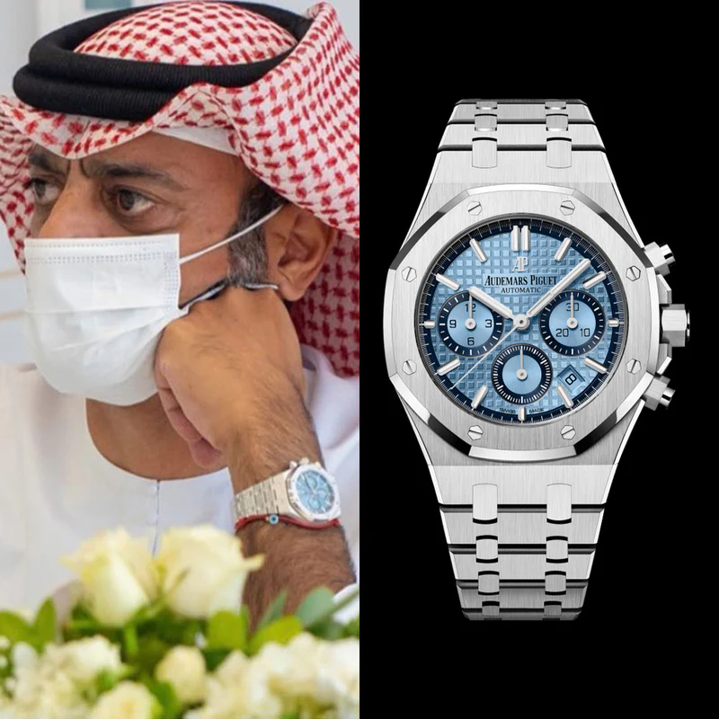

Home · The Collection · Audemars Piguet

Audemars Piguet · 26354ST-OO-1220ST-02
Audemars Piguet Royal Oak Chronograph Ice Blue Dial
RR · Very Rare
| Movement | Self-winding, Caliber 2385 |
| Case | Stainless Steel |
| Dial | Ice Blue Grande Tapisserie |
| Case size | 41mm |
| Power reserve | 40 hours |
| Complications | Chronograph, Date, 30-minute counter, 12-hour counter |
| Year | 2022 |
| Valuation | US$ 85,000 |
The ice-blue dial of this Royal Oak Chronograph is among the most coveted dials in the AP lineup. The striking sunburst glacial blue tones create a mesmerizing play of light across the Grande Tapisserie pattern, complemented by the iconic integrated stainless steel bracelet.